你来比划
我来猜
我来猜
50 道题 · 一题一屏
🐶 动物 10⚽ 运动 11👨⚕️ 职业 10📱 物品 3🙌 动作 16
👆 向上滑动开始
🐶 动物 · 1/10
第 1 题
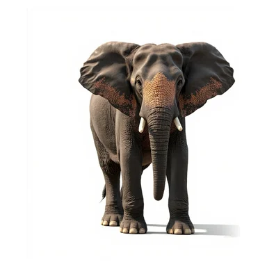
贪吃的猴子
💡 抢过香蕉塞进嘴里💡 两边腮帮子塞满💡 吃饱了拍拍肚皮
你比划 · 朋友猜
🐶 动物 · 2/10
第 2 题
企鹅
💡 黑白配色💡 走路摇摇摆摆💡 生活在南极
你比划 · 朋友猜
🐶 动物 · 3/10
第 3 题

悠闲散步的恐龙
💡 迈着慢悠悠的大步💡 巨大的身体晃啊晃💡 一点都不着急
你比划 · 朋友猜
🐶 动物 · 4/10
第 4 题
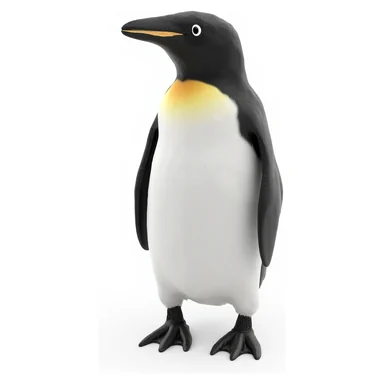
螃蟹
💡 八条腿💡 横着走💡 两把大钳子
你比划 · 朋友猜
🐶 动物 · 5/10
第 5 题
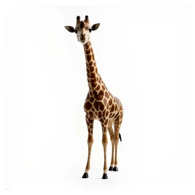
脖子快断掉的长颈鹿
💡 拼命伸长脖子💡 踮脚够高处的树叶💡 仰着头看天
你比划 · 朋友猜
🐶 动物 · 6/10
第 6 题
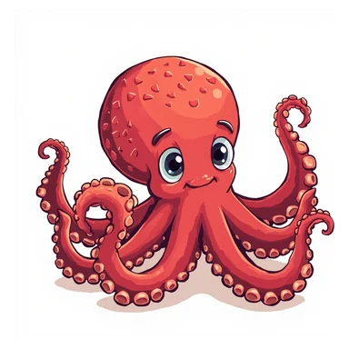
犯困的猫头鹰
💡 眼皮打架打瞌睡💡 晚上才精神💡 脑袋一点一点
你比划 · 朋友猜
🐶 动物 · 7/10
第 7 题
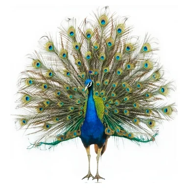
孔雀
💡 会开屏💡 尾巴像扇子💡 很漂亮
你比划 · 朋友猜
🐶 动物 · 8/10
第 8 题
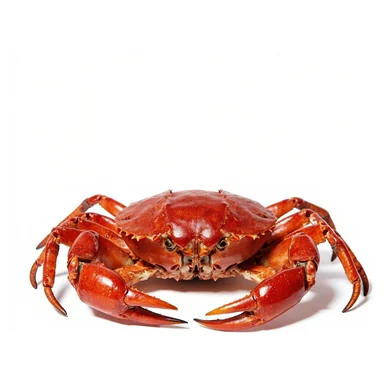
喷水的大象
💡 长鼻子吸满水💡 鼻子一甩水花四溅💡 洗了个痛快澡
你比划 · 朋友猜
🐶 动物 · 9/10
第 9 题
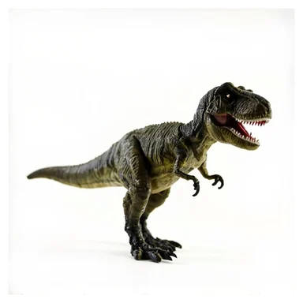
蛇
💡 没有脚💡 会缠绕💡 吐信子
你比划 · 朋友猜
🐶 动物 · 10/10
第 10 题
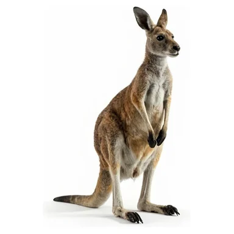
准备打拳的袋鼠
💡 两只拳头举起来💡 蹦蹦跳跳找对手💡 肚子有个口袋
你比划 · 朋友猜
👨⚕️ 职业 · 1/10
第 11 题
飘在太空的宇航员
💡 整个人悬浮起来💡 穿着笨重的太空服💡 慢慢翻个跟头
你比划 · 朋友猜
👨⚕️ 职业 · 2/10
第 12 题
消防员
💡 救火💡 开红色大车💡 背水枪
你比划 · 朋友猜
👨⚕️ 职业 · 3/10
第 13 题
颠勺的厨师
💡 锅往上抛接住💡 手腕一抖一抖💡 戴高帽系围裙
你比划 · 朋友猜
👨⚕️ 职业 · 4/10
第 14 题
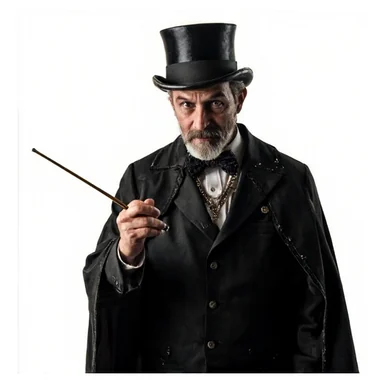
魔术师
💡 戴礼帽💡 会变鸽子💡 手里有魔法棒
你比划 · 朋友猜
👨⚕️ 职业 · 5/10
第 15 题
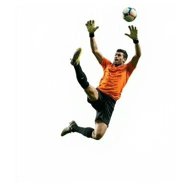
扑出点球的守门员
💡 整个人飞扑出去💡 张开双手挡球💡 守住最后一道门
你比划 · 朋友猜
👨⚕️ 职业 · 6/10
第 16 题
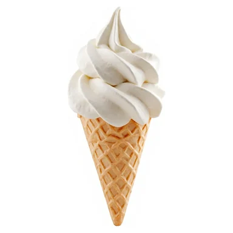
老师
💡 拿粉笔💡 上课💡 批改作业
你比划 · 朋友猜
👨⚕️ 职业 · 7/10
第 17 题
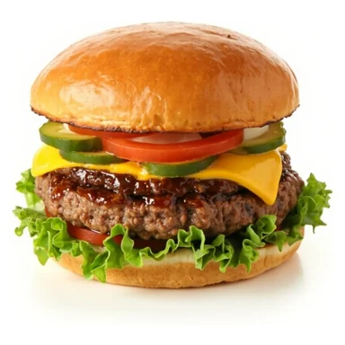
指挥交通的交警
💡 手臂打节拍💡 吹哨子💡 站十字路口
你比划 · 朋友猜
👨⚕️ 职业 · 8/10
第 18 题
医生
💡 听诊器💡 打针💡 白大褂
你比划 · 朋友猜
👨⚕️ 职业 · 9/10
第 19 题
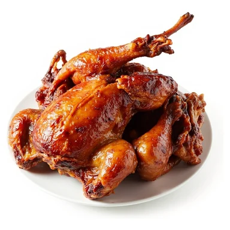
忙不过来的服务员
💡 两只手都端满盘子💡 小跑着穿梭💡 腾不出手
你比划 · 朋友猜
👨⚕️ 职业 · 10/10
第 20 题
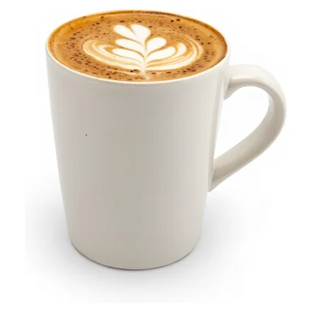
爬楼送货的快递员
💡 抱着大箱子爬楼梯💡 按门铃💡 擦汗
你比划 · 朋友猜
⚽ 运动 · 1/11
第 21 题
跳绳
💡 摇绳子💡 双脚跳💡 花样多
你比划 · 朋友猜
⚽ 运动 · 2/11
第 22 题
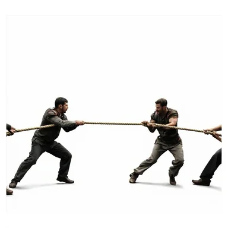
快输掉的拔河
💡 拼命往后倒💡 脚跟站不住了💡 咬牙不松手
你比划 · 朋友猜
⚽ 运动 · 3/11
第 23 题
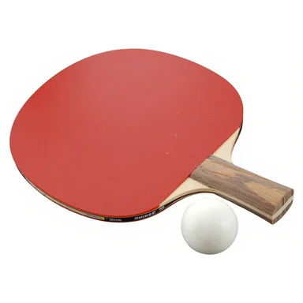
游泳
💡 在水里💡 换气💡 戴泳镜
你比划 · 朋友猜
⚽ 运动 · 4/11
第 24 题
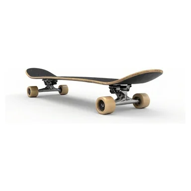
滑滑板
💡 四个轮子💡 踩在上面💡 街头滑行
你比划 · 朋友猜
⚽ 运动 · 5/11
第 25 题
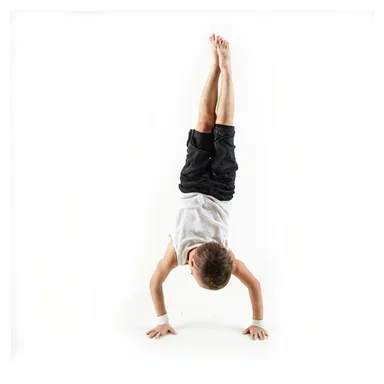
连翻三个跟头
💡 头朝下转圈💡 一个接一个不停💡 落地站稳
你比划 · 朋友猜
⚽ 运动 · 6/11
第 26 题
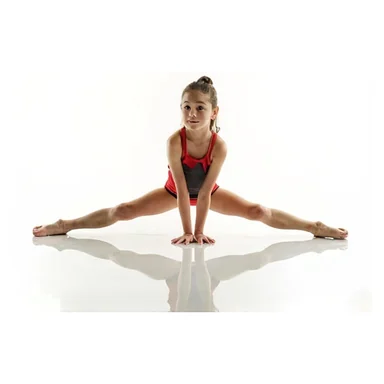
劈叉
💡 两腿分开💡 一字型💡 柔韧性
你比划 · 朋友猜
⚽ 运动 · 7/11
第 27 题
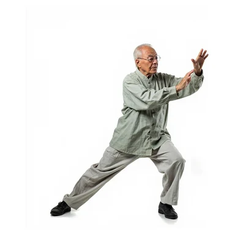
单手倒立
💡 只用一只手撑地💡 另一只手比耶💡 脚朝上头朝下
你比划 · 朋友猜
⚽ 运动 · 8/11
第 28 题
骑自行车
💡 两个轮子💡 踩踏板💡 戴头盔
你比划 · 朋友猜
⚽ 运动 · 9/11
第 29 题
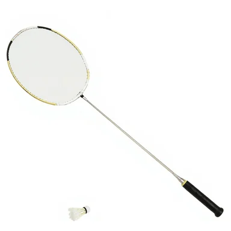
打太极
💡 动作很慢💡 推手💡 爷爷奶奶爱练
你比划 · 朋友猜
⚽ 运动 · 10/11
第 30 题
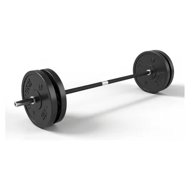
绝杀时刻的篮球
💡 最后几秒投出去💡 全场屏住呼吸💡 球进啦
你比划 · 朋友猜
⚽ 运动 · 11/11
第 31 题
踢足球
💡 用脚踢💡 进球门💡 世界杯
你比划 · 朋友猜
🙌 动作 · 1/16
第 32 题
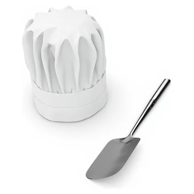
忍了很久的喷嚏
💡 捂住口鼻憋着💡 鼻子皱起来💡 最后还是打出来
你比划 · 朋友猜
🙌 动作 · 2/16
第 33 题
照镜子
💡 对镜子💡 整理头发💡 臭美
你比划 · 朋友猜
🙌 动作 · 3/16
第 34 题
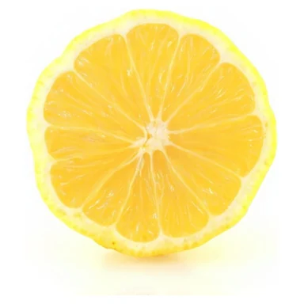
强忍着吃柠檬
💡 酸得眯眼💡 嘴里咝咝吸凉气💡 表面装没事
你比划 · 朋友猜
🙌 动作 · 4/16
第 35 题
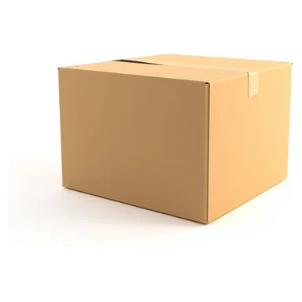
被蚊子咬
💡 挠痒痒💡 嗡嗡叫💡 起包
你比划 · 朋友猜
🙌 动作 · 5/16
第 36 题
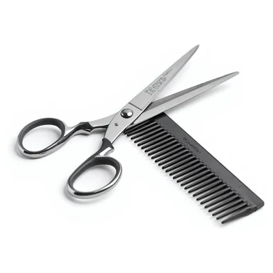
理发
💡 坐椅子上💡 围布💡 剪刀咔嚓咔嚓
你比划 · 朋友猜
🙌 动作 · 6/16
第 37 题
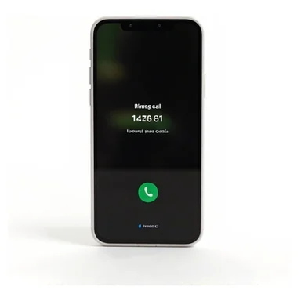
接电话
💡 喂喂喂💡 说个不停💡 手机贴耳朵
你比划 · 朋友猜
🙌 动作 · 7/16
第 38 题
被拖起床的赖床
💡 赖在被窝不肯起💡 被子裹得紧紧的💡 被人拉起来
你比划 · 朋友猜
🙌 动作 · 8/16
第 39 题
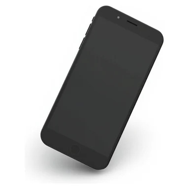
吹蜡烛
💡 过生日💡 一口气💡 火苗熄灭
你比划 · 朋友猜
🙌 动作 · 9/16
第 40 题
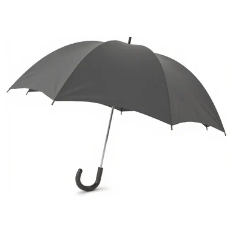
刷牙
💡 上下刷💡 嘴里含着💡 每天早晚
你比划 · 朋友猜
🙌 动作 · 10/16
第 41 题
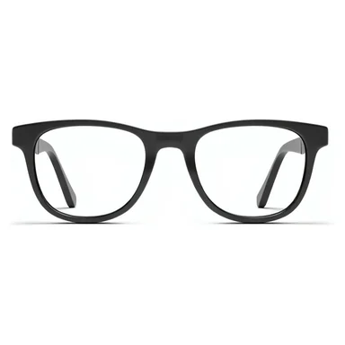
画蛇添足
💡 画一条蛇💡 多画了脚💡 多此一举
你比划 · 朋友猜
🙌 动作 · 11/16
第 42 题
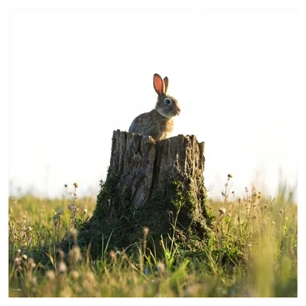
守株待兔
💡 蹲在树桩旁💡 等兔子撞上来💡 傻等
你比划 · 朋友猜
🙌 动作 · 12/16
第 43 题
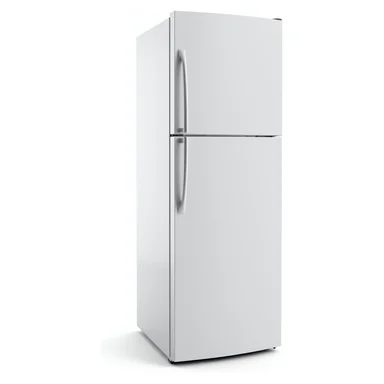
掩耳盗铃
💡 捂住耳朵💡 偷铃铛💡 自己骗自己
你比划 · 朋友猜
🙌 动作 · 13/16
第 44 题
狐假虎威
💡 狐狸在前💡 老虎在后💡 借威风
你比划 · 朋友猜
🙌 动作 · 14/16
第 45 题
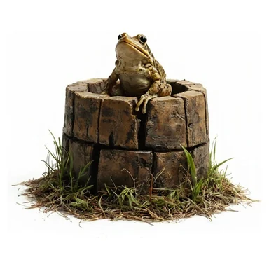
井底之蛙
💡 坐在井里💡 抬头看天💡 眼界小
你比划 · 朋友猜
🙌 动作 · 15/16
第 46 题
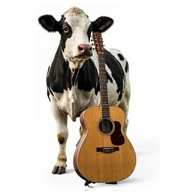
对牛弹琴
💡 弹琴💡 牛在听💡 白费劲
你比划 · 朋友猜
🙌 动作 · 16/16
第 47 题
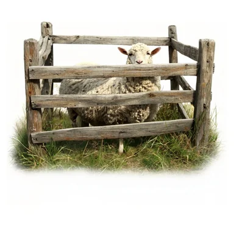
亡羊补牢
💡 羊跑了💡 修栅栏💡 还不晚
你比划 · 朋友猜
📱 物品 · 1/3
第 48 题
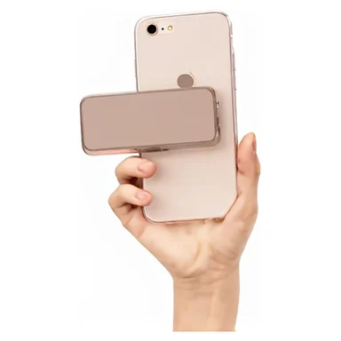
自拍
💡 举手机💡 嘟嘴比耶💡 拍照
你比划 · 朋友猜
📱 物品 · 2/3
第 49 题
扫码失败的手忙脚乱
💡 手机晃来晃去对不准💡 滴——失败💡 越急越扫不上
你比划 · 朋友猜
📱 物品 · 3/3
第 50 题
戴VR眼镜
💡 头上绑设备💡 看虚拟世界💡 伸手乱摸
你比划 · 朋友猜
🎉
全部 50 题完成！
换个人再来一轮 →